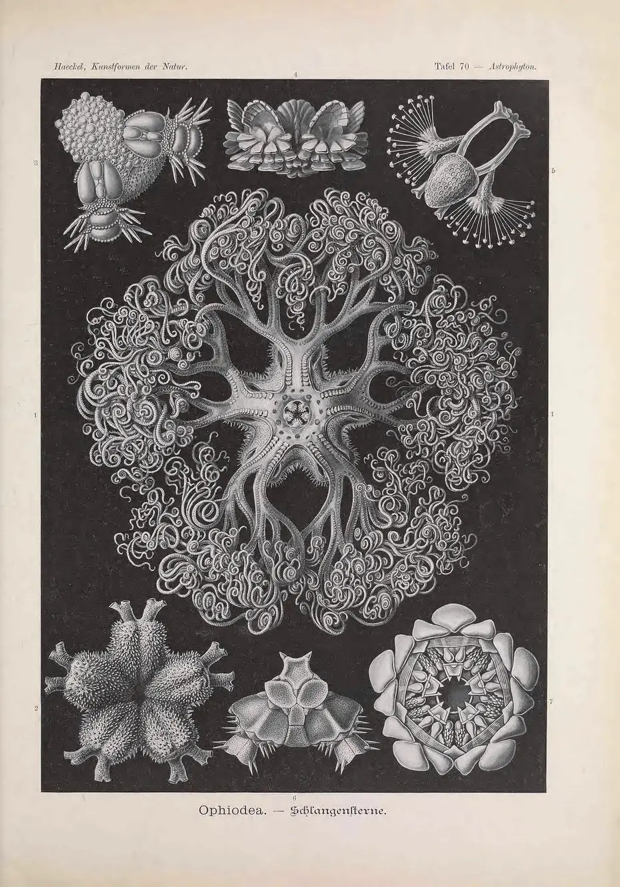

Ophiodea (Kunstformen der Natur, plate 70)
Ernst Haeckel & Adolf Giltsch · 1899–1904 · Book plate (printing method not confirmed) · Smithsonian Libraries and Archives
Free to use
In his preface Haeckel wrote that journeys over forty-five years had taken him to every country and coast of Europe and to the shores of North Africa and southern Asia. Thousands of the drawings he made from nature on those journeys were already in print in his monographs, and others were published here for the first time.